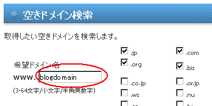
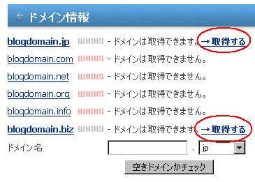

独自ドメインの取得方法
ドメインの取得は早い者順です。
まだ誰にも利用されていないドメイン名は、すぐに取得することができます。
割合でいうと「.comドメイン」が一番多く、次に「.net」や「.org」などが続きますが、日本ではjpドメインなどの人気も高いです。
格安でドメインを取得できるおすすめレジストラ
独自ドメインの取得事業者も多数ありますが、会社によっての価格差がかなりあります。 レンタルサーバーを借りた会社で取得する人も多いですが、割高になってしまう傾向があるため、ドメインを専門に扱っている会社で登録されるとよいでしょう。
レンタルサーバーとドメインを別々の会社で取得してもまったく問題ありません。
おすすめの格安ドメイン取得サービス
■ バリュードメイン
海外大手enomの代理店（リセラー）です。
登録者情報などの個人情報は無料で代理公開してくれます。当サイトのドメインもこちらで管理していますが、設定方法は多少複雑なものの、高機能なので安心して使うことができます。
■ ムームードメイン
お名前どっとこむのGMO系列です。
設定変更などの手数料もかからず、比較的、格安で取得することができます。
whois情報の代理公開もしてくれます。
■ お名前.com
ICANNの認定レジストラで、企業サイトで利用されることが多いです。
移管などの際に手数料がかかりますが、法人で信頼性に重点を置く場合はお名前.comがおすすめです。
世界的にみると大手のレジストラです。円安で取得料金が高くなってきている傾向があり、また代理公開なども別料金ですが、ドメイン売買の際は便利な印象があります。決済にはpaypalを利用すると良いでしょう。
ドメイン取得の手順 例：バリュードメイン
まずは取得したい文字列で検索しましょう。

comやnet、orgなど、それぞれのドメインで取得可能な状態かわかるので、空いているものから選択して取得します。

あとからの変更も可能ですが、取得する際にwhois情報の代理公開の設定などもしておくとよいでしょう。
ドメインを取得する際の基礎知識
一般的なcomやnet、org、あるいは.bizや.infoなどの場合、新規で取得する際の料金は年間1,000円程度です。以降、１年ごとの更新になりますが、もし更新をしなかった場合、他の人が誰でも取得できる状態になります。
- .com
- .org
- .net
- .info
- .biz
これらは世界中の人が誰でも取得できる標準的なドメイン名です。
comやbizは商用、orgは非営利というイメージがありますが、あまり関係なく利用されることも多いです。
一方、日本で人気の「jpドメイン」は少し価格が高く、年間の更新料が3,500円程度かかり、取得方法についても多少勝手が違います。
こちらは「日本国内に住所を有する個人」しか取得できませんので、ほぼ、日本人が利用しているドメインになります。
- .jp
他にも、企業用のco.jpや教育機関のac.jpや.edu、あるいは政府系のgo.jpなどもありますが、これらは組織や団体に割り当てられるものなので、個人では取得することができません。
もし、会社ホームページ用にドメインを取得する際は、「co.jp」（一般営利法人）や「or.jp」（病院などの非営利法人）を選択されることをおすすめします。
- .co.jp
- .or.jp
個人の方におすすめなのは、「.com」でハイフンなし、サイトのテーマと関連性のある、短めで辞書に載っているような英単語のドメイン名です。 ただ、一般的な単語名でのドメインは既に取得されつくされており、なかには数億円以上で取引されているケースもありますので、取得するのは難しいかもしれません。
迷った場合は.comで取得しておけば、後悔することはないと思います。
一方、法人組織の場合、通常の.comよりも、「co.jp」や「or.jp」で取得されることをおすすめします。法人組織でしか取得できないという制限があるため、そのドメイン名を使用しているだけで信頼性の証にもなります。
大塚商会のレンタルサーバ は法人や個人事業でしか契約できませんが、サーバー契約でco.jpドメインなどを無料で取得できて便利です。
独自ドメイン取得の際の制限について
固有の企業名や商品名、有名人の名前など、他人の権利を侵害するようなまぎらわしい形でのドメイン名を取得すると商標権に抵触する可能性があります。
例えば、ヤフーのドメイン名は「www.yahoo.co.jp」ですが、jpドメインでハイフンを付けて「www-yahoo-co.jp」みたいな感じで登録し、www なしでの運用設定にすると、ヤフーとまぎらわしいサイトを作成することもできるかと思います。
けれども、実際に登録してみたとしても、他人の権利を侵害するような独自ドメイン名の場合は取り上げられることもあります。
有名人と同姓・同名の場合や、以前から商品名として使っていた場合など、きちんとした正当性がある場合は何ら問題がありませんが、正当性を主張できない場合は取り上げられる可能性もありますので注意しましょう。
ドメイン名にサイトの関連キーワードを含ませる
売却する目的で独自ドメインを取得する場合、ハイフンで区切られている形のものはあまり人気がないです。
けれども、SEO対策の面でいえば、ドメイン名が長くなる場合はハイフン「-」で区切って、関連性のあるキーワードで独自ドメインを取得するとよいようです。
また、「blog」と「burogu」のように、英語と日本語での音読みの違いがありますが、どちらかというと英語表示そのままの方がおすすめです。
キーワードをそのまま翻訳にかけてみて、英語表示での独自ドメイン名をつけることをおすすめします。
日本語読みそのままの場合、例えば、「tukurikata」（作り方）のように、長くなってしまう傾向があり、あまりに長いと検索エンジンではキーワードとして認識されないようです。
取得しようとするドメイン名をグーグルで検索してみて、検索結果に関連性のあるサイトが何も表示されなかったら、そのドメイン名はキーワードとしては認識されていないはずです。
迷った場合には、取得しようとする単語名でそのまま検索にかけてみて、関連するサイトが表示されるかをチェックしてみるとよいでしょう。
- シーサーブログを独自ドメイン化
独自ドメインを取得したあとはレンタルサーバーを借りて、そのあとＭＴブログというパターンが多いのではないかなと思います。けれども、シーサーブログで独自ドメイン化すると、サーバー代がかからないのでおすすめ... - 独自ドメインが使えるブログサービス
シーサーブログでは取得した独自ドメインを無料で運用できますが、実際に独自ドメインに設定した場合、デフォルトのアフィリエイトなど若干ではありますが、不都合な面も出てくるようです。けれども、ほとんどの無料... - 独自ドメインとサブドメインの見分け方
ブログで独自ドメインとかサブドメインとかっていうのをよく聞くんですけど、いまいちよくわかんないとこもあったりです。 特に無料ブログを独自ドメイン化して運用しようってときは、いまいちどうやればいいのか... - 独自 - サブドメインのSEOブログ構成
最近このブログを独自ドメイン化してみたのですが、独自ドメインブログは単体ではちょっと味気ないんで、サブドメインブログもくっつけてみようと思うんです。seesaa でのサブドメインブログの作り方としては...